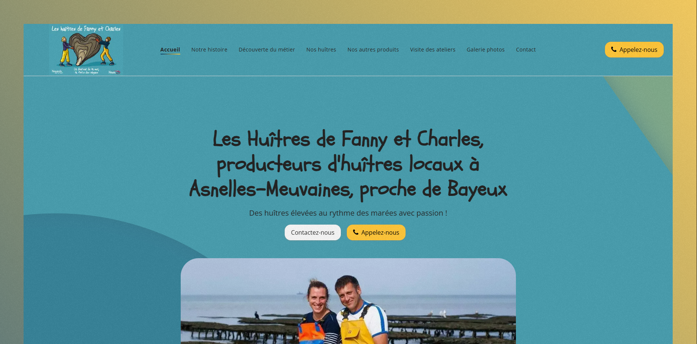
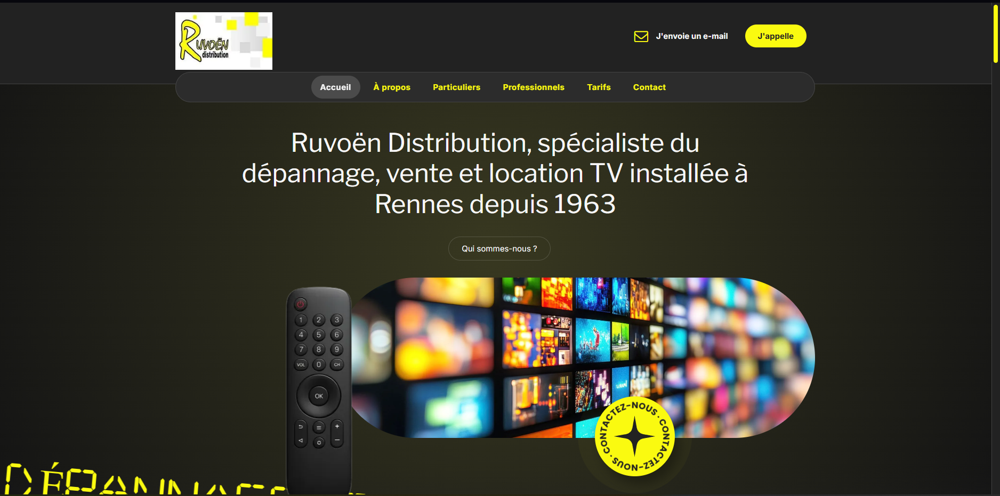
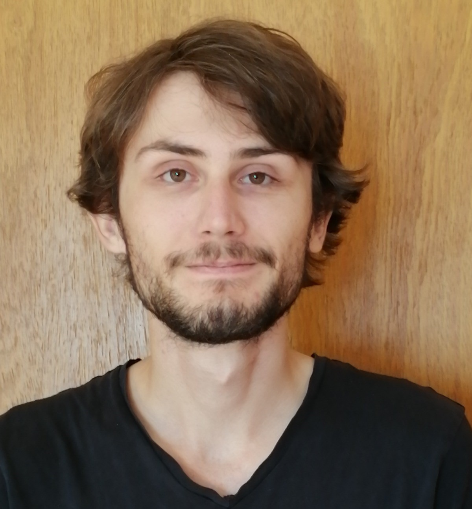

Portfolio




Passionné par la création d'expériences web innovantes et intuitives
Voir mon travailJe suis un développeur web junior passionné par la création d'applications modernes, performantes et esthétiques. Mon intérêt ne se limite pas au développement web : je m'intéresse également au web design et aux arts graphiques, domaines qui nourrissent ma créativité et ma vision globale des projets numériques.
Grâce à une formation solide et à des expériences variées, j'ai acquis une maîtrise des technologies front-end et back-end, ainsi qu'une approche orientée utilisateur. Autonome de nature, je sais aussi bien travailler seul qu'en équipe, en adaptant ma méthode de travail aux besoins du projet.
Anciennement chargé de projet web chez Solocal Marketing Services, je combine compétences techniques et sens stratégique pour concevoir et livrer des solutions web de qualité.

Développement web et conception d'interface
Formation complète en développement web, design et communication digitale
Première année d'études supérieures en économie et gestion
Mention Bien - Économique et Social
Solocal Marketing Services
Gestion de projets web, suivi client et optimisation du référencement.
Bee Automation
Développement d'interface web complètes, maintenance et évolution de systèmes existants.
Bee Automation
Stage de fin de DUT (3 mois) - Développement front-end et back-end, intégration d'APIs.


Pratique depuis mes 10 ans, passion pour la musique classique et contemporaine
Amateur de grands espaces, j'ai réalisé le tour du Mont-Blanc en bivouac en 2023
Passionné de culture générale géographique
N'hésitez pas à me contacter pour discuter de vos projets ou opportunités de collaboration.